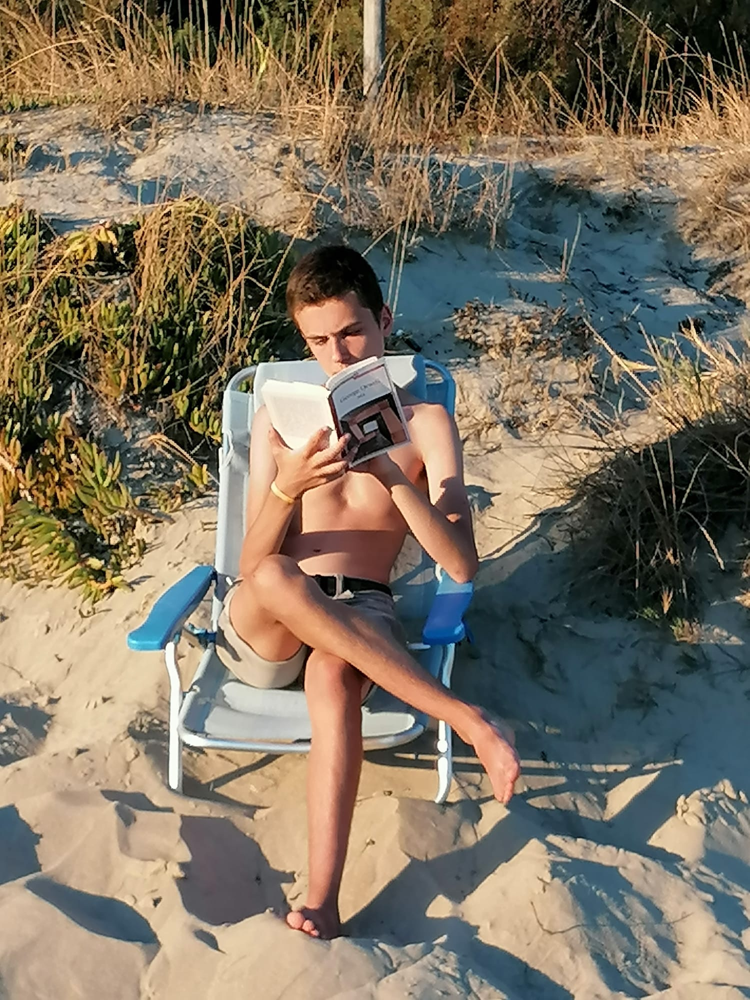

Reading on the beach." id="photo">
- Stoner di John Williams
- Geometrie del Suono
- Anna Karenina di Lev Tolstoj
- Il deserto dei Tartari di Dino Buzzati
- Guida galattica per gli autostoppisti di Douglas Adams
- Detti pisani per gente ammodino di Stefano Renzoni
- The giver di Lois Lowry
- La scopa del sistema di David Foster Wallace
- Man's search for meaning di Viktor Frankl
- Sonata a Kreutzer di Lev Tolstoj
- La ragazza con i capelli strani di David Foster Wallace
- Le notti bianche di Fëdor Dostoevskij
- Una cosa divertente che non farò mai più di David Foster Wallace
- Piccoli suicidi tra amici di Arto Paasilinna
- Donne, madonne, mercanti e cavalieri di Alessandro Barbero
- Il prete bello di Goffredo Parise
- Tra Mosca e Petuski di Venedikt Erofeev
- Delitto e castigo di Fëdor Dostoevskij
- La cantatrice calva di Eugène Ionesco
- Ma chi me lo fa fare di Andrea Colamedici e Maura Gancitano
- La lezione di Eugène Ionesco
- Il riso di Talete di Gabriele Lolli
- Uova Fatali di Michail Bulgakov
- Cuore di Cane di Michail Bulgakov
- Pinocchio di Carlo Collodi
- L'incognita di Hermann Broch
- Alice in Wonderland di Lewis Carrol
- I viaggi di Gulliver di Jonathan Swift
- Quando abbiamo smesso di capire il mondo di Benjamin Labatut
- La voglia dei cazzi e altri fabliaux medievali di Alessandro Barbero
- Il Maestro e Margherita di Michail Bulgakov
- Il Mondo Nuovo di Aldous Huxley
- L'ordine del tempo di Carlo Rovelli
- La morte di Ivan Il'ič di Lev Tolstoj
- Tasmania di Paolo Giordano
- Palomar di Italo Calvino
- Questa è l'acqua di David Foster Wallace
- Brevi interviste con uomini schifosi di David Foster Wallace
- Il colonnello Chabert di Honoré de Balzac
- Considera l'aragosta di David Foster Wallace
- Una cosa divertente che non farò mai più di David Foster Wallace
- Il tennis come esperienza religiosa di David Foster Wallace
- Meglio essere felici di Zygmunt Bauman
- 1984 di George Orwell
- La bomba atomica di Roberto Mercadini
- Surely you're joking Mr. Feynman di Richard Feynman
- Frankenstein di Mary Shelley
- Humble Pi di Matt Parker
- Flatlandia di Edwin Abbott
- The Slight Edge di Jeff Olson
- Animal Farm di George Orwell